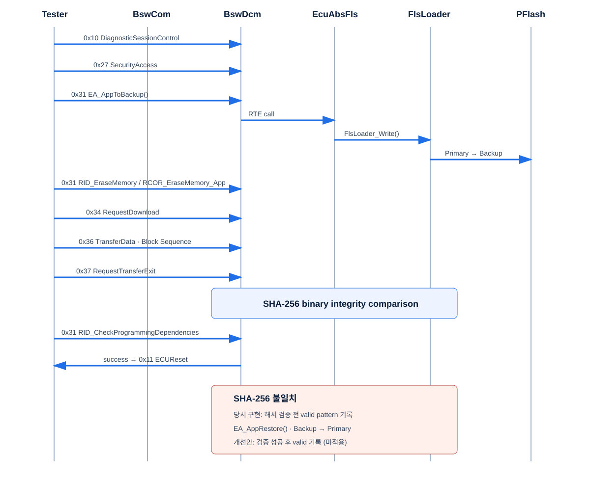

BOOTLOADER EVIDENCE 02
UDS Reprogramming Sequence
UDS 7개 서비스, Application Backup, Binary 무결성 판정과 실패 Restore 경로를 계층 호출과 함께 보여줍니다.
정상 리프로그래밍과 실패 복구 흐름

서비스 순서
| 순서 | 서비스 | 핵심 처리 | 실패 정책 |
|---|---|---|---|
| 1 | 0x10 DiagnosticSessionControl | Programming Session 진입 | 세션 조건 불충족 시 요청 거부 |
| 2 | 0x27 SecurityAccess | 보호된 Programming 서비스 접근 | 인증 단계 실패 시 Download 금지 |
| 3 | 0x31 RoutineControl | EA_AppToBackup() 후 RID_EraseMemory 실행 | Backup 실패 시 Primary Erase 금지 |
| 4 | 0x34 RequestDownload | 주소·길이와 전송 상태 초기화 | 형식·범위 오류 NRC |
| 5 | 0x36 TransferData | Block Sequence 검사, Binary 기록, SHA-256 누적 | 순서 불일치·Write 오류 시 중단 |
| 6 | 0x37 RequestTransferExit | 전송 종료와 최종 무결성 판정 | SHA-256 불일치 시 valid 처리 금지 |
| 7 | 0x31 RID_CheckProgrammingDependencies | 프로젝트 구현의 의존성 확인 분기 | 공개 자료에는 확인 가능한 검사만 기재 |
| 8 | 0x11 ECUReset | 성공 또는 복구 정책 완료 후 Reset | 미완료 상태에서 Application Jump 금지 |
RoutineControl 실제 정의
#define RID_CheckProgrammingDependencies 0x0001u
#define RID_EraseMemory 0x0002u
#define RCOR_EraseMemory_App 0xF001u
31 01 00 02 F0 01
| | |-----| |---|
SID RID RCOR
BswDcm
→ Rte_Call_BswDcm_rEcuAbsFls_erasePflashBlock()
→ REoiEcuAbs_pEcuAbsFls_erasePflashBlock()
→ EA_erasePflashBlock()SHA-256 불일치 시 Application을 valid 상태로 처리하지 않고 EA_AppRestore()로 Backup을 Primary에 복원한 뒤 read-back·무결성 재검증을 수행하는 구조입니다.